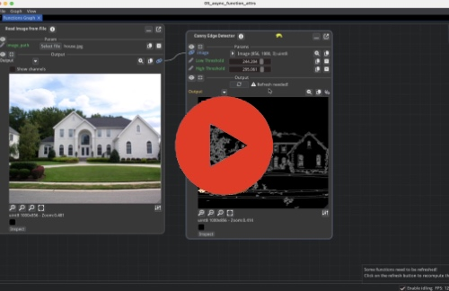
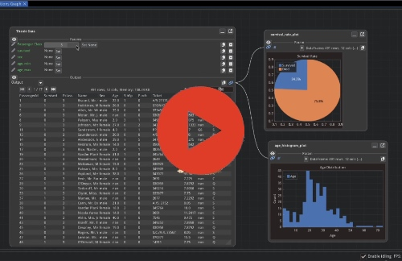

Fiatlight#
Create Applications Instantly with One Line of Code
With Fiatlight, you can instantly generate rich, interactive user interfaces. For example, the application below combines two functions:
generate_image: creates an AI-generated image from a promptadd_text_to_image: adds custom text (a meme caption) to the image

To run this application, you only need this line of code: fiatlight.run([generate_image, add_text_to_image])
Fiatlight then creates an automatic user interface where users can adjust every parameter and save/reload their work. You do not have to write any UI code: all you do is compose the logic by combining functions, and Fiatlight takes care of the rest.
Fiatlight lets anyone prototype, experiment, and share powerful applications—without boilerplate UI code.
For technical readers:
FiatLight provides automatic UI generation for functions and structured data (dataclasses, pydantic models), making it a powerful tool for rapid prototyping and application development.
It is built on top of Dear ImGui Bundle. Applications developed with fiatlight are very fast, and provide feedback in real-time (at 120 FPS!).
Since Dear ImGui Bundle is available via Pyodide, Fiatlight applications can be used locally or deployed as static web pages, without any server-side component.
You may think of Fiatlight as “ComfyUI for any type of data and functions”: rapid, visual, and interactive pipelines for far more than AI image generation.
The name “Fiatlight” is inspired by “Fiat Lux”, i.e. “Let there be light”.
Videos demonstrations#
(Additional tutorials and videos are available on the video tutorials page)
|  |
First steps Tutorial (8 min) Function-to-GUI basics, customization, and state persistence |
|  |
Intermediate tutorial (6 min) Exception handling, validation, and visual debugging |

|
A full demo of Fiatlight (8 min) Complete overview showcasing AI integration, image processing, audio analysis, and data visualization capabilities across multiple application domains, using visual examples. This demo is an illustration of the content of this page |
Key Features and examples#
This page intends to provide a high-level overview of Fiatlight’s capabilities. For detailed tutorials, please refer to the video tutorials and the manual.
Create a GUI for any function#
Simply call fl.run with a function or a list of functions, and Fiatlight will automatically generate a GUI for them.
# Part 1: Standard Python code (no user interface)
# ------------------------------------------------
import numpy as np
import matplotlib
matplotlib.use('Agg')
import matplotlib.pyplot as plt
def lissajous_curve(freq1: float = 5.0, freq2: float = 4.0, delta: float = np.pi / 2, nb_periods: float = 1) -> plt.Figure:
"""Creates a Lissajous curve, and returns a Matplotlib figure."""
t = np.linspace(0, 2 * np.pi * nb_periods, 10_000)
x = np.sin(freq1 * t + delta)
y = np.sin(freq2 * t)
fig, ax = plt.subplots()
ax.plot(x, y)
return fig
# Part 2: Add a GUI to the code in a few seconds
# -----------------------------------------------
import fiatlight as fl
# Options for widgets
fl.add_fiat_attributes(
lissajous_curve,
freq1__range=(0, 10), freq2__range=(0, 10), delta__range=(-np.pi, np.pi),
nb_periods__range=(0.1, 10), nb_periods__edit_type="knob",
)
# Run the function interactively
fl.run(lissajous_curve, app_name="Interactive Lissajou Curve")
See the application in action in the video below
From Idea to App in 3 minutes#
For example, the application we saw in the introduction can be created in just 4 lines of code: we simply import our functions and fiatlight, and call fl.run with the list of functions:
import fiatlight as fl
from fiatlight.fiat_kits.fiat_ai import invoke_sdxl_turbo
from fiatlight.fiat_kits.fiat_image.add_meme_text import add_meme_text
fl.run([invoke_sdxl_turbo, add_meme_text], app_name="Old school meme generator")
This application state is automatically persistent:
All inputs are saved: prompt, and meme text, font, color, position of the text
All preferences are saved: window size, position, and layout of the nodes
The user can save and load different state of the application (i.e. different memes)
For technical readers:
invoke_sdxl_turboprovides a simple wrapper to SDXL, andadd_meme_textis a Python function that adds colored text onto an image.
Domain-specific Kits:#
fiatlight.fiats_kits is intended to provide a set of pre-built functions and widgets for various domains, such as:
Image analysis: Sophisticated image analysis and manipulation widgets. See fiat_image.
Data Visualization: Display interactive data plots and charts for real-time data analysis, using MatPlotlib or ImPlot. See fiat_matplotlib, and fiat_implot (for ImPlot)
Data Exploration: Provide widgets for exploring dataframes. See fiat_dataframe.
AI: (Draft) Provide a widget for Prompt entry, and an interface to Stable Diffusion. See fiat_ai.
Image analysis#
The example below shows an image which undergoes a pipeline for a dilated edge extraction. The image viewer can pan & zoom the images in sync, and display the pixel values
import fiatlight as fl
from fiatlight.fiat_kits.fiat_image import image_from_file
from fiatlight.demos.images.demo_canny import canny, dilate
fl.run([image_from_file, canny, dilate], app_name="demo_computer_vision")
For technical readers:
image_from_fileis a function that reads an image from a file,cannyapplies the Canny edge detection algorithm, anddilatedilates the edges.
Data visualization with Matplotlib and ImPlot#
In the example below, we display figures using ImPlot (left) and Matplotlib (right). Each figure provides user-settable parameters (in a given range, with customizable widgets). The sine wave function is updated in real time.
from fiatlight.demos.plots import demo_mix_implot_matplotib
demo_mix_implot_matplotib.main()
For technical readers:
when a function returns a
matplotlib.figure.Figure, its output will be displayed as a plot. See demo_matplotlib.py source code.*when a function returns a
fiat_implot.FloatMatrix_Dim1orfiat_implot.FloatMatrix_Dim2(which are aliases for np.ndarray), its output will be displayed as a plot, using ImPlot. See demo_implot source code.ImPlot is a plotting library for Dear ImGui. It is often faster than Matplotlib, and can be used in real-time applications. For a complete demo of ImPlot, click here: ImPlot complete demo*
Data Frames#
In the example below, we display a data frame from the famous titanic example with filtering.
from fiatlight.fiat_kits.fiat_dataframe import dataframe_with_gui_demo_titanic
dataframe_with_gui_demo_titanic.main()
Visualize, Understand, Innovate#
Visualize the Pipeline flow#
Example: the application below looks for the most frequent words in a given text file (here with the text from “Hamlet”), by applying a pipeline of transformations. It is possible to inspect the input and outputs of each function.
from fiatlight.demos.string import demo_word_count
demo_word_count.main()
For technical readers: demo_word_count will simply chain the following string functions:
text_from_file, str_lower, split_words, filter_out_short_words, sort_words, run_length_encode, sort_word_with_counts. See its source
Examine and understand function internals#
fiatlight provides you with powerful tools to visually debug the intermediate states of your function.
Example: the function add_toon_edges below is a complex function that adds a toon effect to an image. We can visualize the intermediate internal variables of the function (edges, dilated edges), even if they are not returned by the function.
import fiatlight as fl
from fiatlight.fiat_kits.fiat_image import ImageU8_GRAY, ImageU8_3, image_source
from fiatlight.demos.images.toon_edges import add_toon_edges
fl.run([image_source, add_toon_edges], app_name="Toon Edges")
For technical readers: the function
add_toon_edgeshas an attributefiat_tuningthat contains the internal variables that will be displayed. See demos/images/toon_edges.py.
Replay and debug function errors#
Example: the following application raises an error. However, this error can be replayed, with the exact same inputs to facilitate the debugging
import fiatlight as fl
import math
def float_source(x: float) -> float:
"""A source where the user can specify an input value."""
return x
def sin(x: float) -> float:
return math.sin(x)
def log(x: float) -> float:
return math.log(x)
fl.run([float_source, sin, log], app_name="Replay error")
For technical readers: the function
logwill raise an error when x is negative. Once you click on the “Debug this exception” button, you will be able to debug it:
Target Audience#
Fiatlight is best suited for:
Hobbyists wanting to create interactive applications quickly
Educators and instructors needing interactive tools for teaching programming or algorithms
Researchers who need shareable demos or visualizations of their work
Developers who want to fine tune their algorithms, with visual feedback
Library authors who want to showcase or demonstrate how to use and compose their functions
Data scientists and analysts wanting instant GUI dashboards for exploring data
Full pdf version of this book#
View or download the [full pdf](https://pthom.github.io/fi atlight_doc/flgt.pdf) for this manual.
You may feed it into a LLM such as ChatGPT, so that it can help you when using Fiatlight.